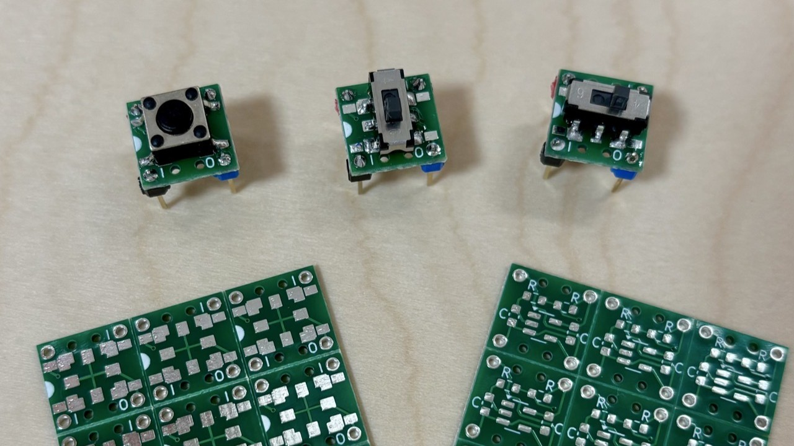

チャタリング除去 スイッチDIP化基板
スイッチ、CRローパスフィルター、シュミットトリガーインバーターを8ピンDIPサイズに実装できる基板です。
特徴
- スライドスイッチとタクトスイッチどちらも対応
- スライドスイッチは横向き、縦向きどちらでも取り付けが可能
- 細ピンヘッダだけではなく、通常の太いピンヘッダにも対応
部品
コンデンサと抵抗はすべて1608サイズ（mm）です。
表で2行になっているスイッチとICは、お好みでどちらかを選択してください。シュミットトリガーインバーターICを、4000シリーズのロジックICの「BU4S584G2」にすると16Vまで使えます。74シリーズの「TC7S14F」にすると6Vまでです。
スライドスイッチを縦に実装する際は、ピンヘッダや連結ソケットの中央2本が干渉します。ピンを切り取るか抜き取ってから実装してください。
| 記号 | 種類 | 型番・値 | 数 | 備考 |
|---|---|---|---|---|
| C1, C2 | コンデンサ | 100nF(0.1µF) | 2 | |
| R1 | 抵抗 | 10kΩ | 1 | |
| R2 | 抵抗 | 10kΩ | 1 | ※1 |
| SW1 | スイッチ | SSSS213202 | 1 | スライドスイッチ |
| TS-06104 | タクトスイッチ | |||
| U1 | IC | BU4S584G2 | 1 | 16Vまで |
| TC7S14F | 6Vまで |
※1：うちの環境では問題ないことを確認していますが、10kΩだと時定数が1msと少し短いです。もし、チャタリングが発生する場合は100kΩに変更してください
部品配置図
表（タクトスイッチ）
表（スライドスイッチ）

裏
備考
表面配線は下図のようになっているため、隣接するタクトスイッチ用パッドがショートしても問題ありません。
回路図